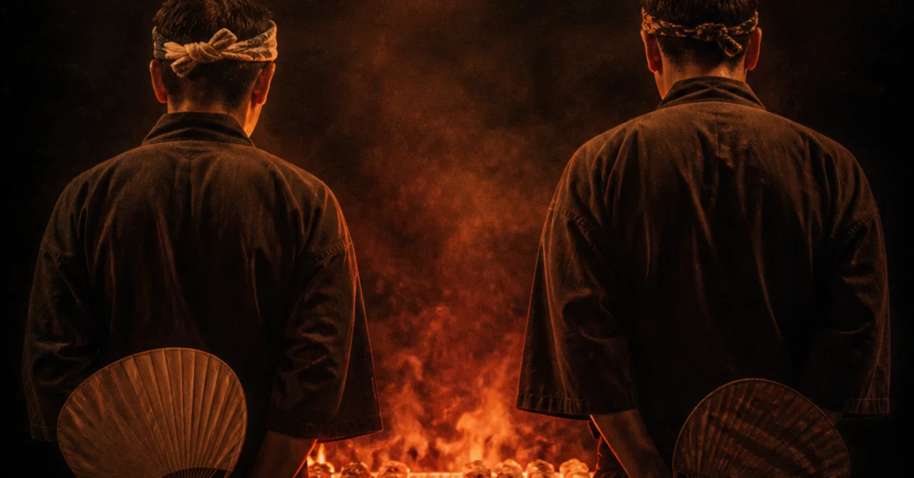

「ボードゲームの作り方」が分からなかったので、アプリで再現してみた
「ボードゲームの作り方」について読んだことがありました。
『自分だけのボードゲームを作ろう』という本です。
リソースの管理やジレンマの設計など、
少し難しいですが、書いてある仕組みはなんとなく分かりました。
ただ、オセロや人生ゲームぐらいしか遊んだ経験がなく、
「なぜそれが面白いのか」までは、よく分からないままでした。
最近、自作アプリばかり作っています。
理屈で分からないなら、触って確かめてみようと思いました。
いつものように、ソファ上でiPhoneを開き、
盤面やボタンを並べていきます。
見よう見まねでルールを入れて、
資源が増えるようにし、電線を引けるようにする。
一応、遊べる状態にはなりました。
でも、まだよく分かりません。
「動く」だけで、どこが面白いのかしっくりこないままでした。
分からないので、今度は全部見えるようにしてみます。
数字も状態も、画面に出していく。
確かに分かりやすくはなりました。
でも今度は触っても楽しくありません。
そこで、文字や数字をやめて、記号と色に置き換えてみました。
すると、急に情報が頭に入ってくるようになりました。
ここで一度、「できた」と思いました。
しかし、遊んでみても、まだ少しだけ引っかかる。選んだ結果がしっくりこない。
見た目は整っているのに、
どこかで引っかかっている感じがします。
ここで、方針を変えることにしました。
「これを、現実の紙とコマだけで遊べるか」
それを基準にしてみました。
画面の中では、いくらでも複雑な計算ができますが、
実際に人間が一度に見られるもの、
手で管理出来るものはそんなに多くありません。
自分で分かりにくいと思ったところを、ひとつずつ削っていきます。
なぜその操作を選ぶのか。
なぜその強さなのか。
手触りとして繋がらないものは、だいたい消えていきました。
そうやってそぎ落としていった結果、
最終的に残ったのは、
なぜか「二人で焼き鳥を焼き合う」謎のゲームでした。
これまでプログラムのために手は動かしていたけど、
「面白さ」に触れることができていなかったのかもしれません。
理屈通りに「正しいボードゲーム」を作ろうとしていましたが、
私が本当に欲しかったのは、
「自分が触っていて納得出来るもの」だったようです。
つい先日、アプリを出すのが怖いという記事を書いたばかりですが、今回はこれをWeb版として置いてみることにしました。
まだ完成とは言えないので、勇気を出して少しだけ外に出してみます。
ここから育てていくつもりです。
ちょうどいい焼き加減は、
まだ自分でも分かっていません。
sukimastock.itch.io ↗